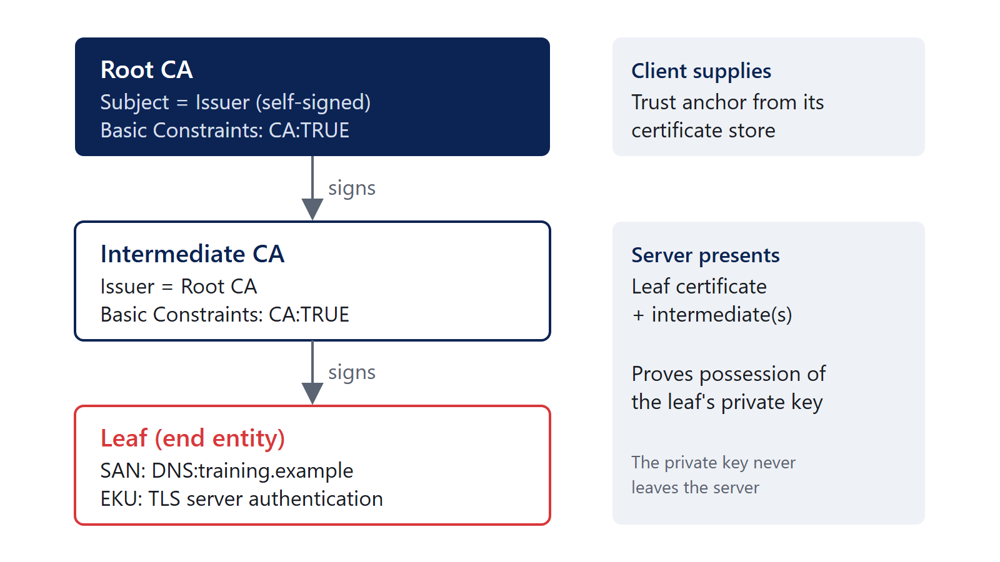

PKI
Inspect a certificate, explain issuance, and name the validation check that fails.
Public key infrastructure
- Public keys and private keys. A key pair is two related keys. What one does, only the other can undo: data encrypted to the public key needs the private key to decrypt, and a signature made with the private key verifies with the public key. The private key never needs to leave its owner.
- What a certificate does and does not prove. A certificate is a signed statement from a certificate authority (CA): this public key belongs to this name, for these uses, during this time. It does not prove the site is safe, that the operator is who you assume, or that the private key has not been stolen since.
- Certificate authorities and trust. You trust a CA because a trust store says to: the operating system’s, the browser’s, or one you configured. A certificate is only as trustworthy as the CA that signed it and the store that trusts that CA.
The profile for certificates on the internet is RFC 5280.
Sample files
Fictional public certificate and CSR samples. Do not install the training root. No private keys are included. The private training CA’s lifetime is not a statement of public Web PKI issuance policy.
| File | What it is |
|---|---|
| training-root.pem | Self-signed root CA, CN=CRT Fictional Training Root, PEM |
| training-leaf.pem | Server certificate for training.example, issued by the root, PEM |
| training-leaf.der | The same leaf certificate, DER |
| training-request.csr | The PKCS #10 request the leaf was issued from |
The chain is two levels: the root signs the leaf directly. Public CAs issue from an intermediate, as in the diagram below.

What’s in a certificate?
Output of openssl x509 -in training-leaf.pem -noout -text (OpenSSL 3.5.7), modulus and signature trimmed:
Certificate:
Data:
Version: 3 (0x2)
Serial Number:
05:6d:6d:da:99:ef:6a:99:e4:fe:84:15:b9:c1:b4:08:c5:b6:0a:94
Signature Algorithm: sha256WithRSAEncryption
Issuer: CN=CRT Fictional Training Root
Validity
Not Before: Oct 1 00:00:00 2026 GMT
Not After : Oct 1 00:00:00 2027 GMT
Subject: CN=training.example
Subject Public Key Info:
Public Key Algorithm: rsaEncryption
Public-Key: (2048 bit)
Modulus: 00:c5:48:e6:ab:b4:b4:3d:34: ...
Exponent: 65537 (0x10001)
X509v3 extensions:
X509v3 Basic Constraints: critical
CA:FALSE
X509v3 Subject Alternative Name:
DNS:training.example
X509v3 Extended Key Usage:
TLS Web Server Authentication
Signature Algorithm: sha256WithRSAEncryption
Signature Value: 98:6d:3b:4a:11:83:2e:2e: ...The root has Basic Constraints: critical, CA:TRUE, pathlen:0: it may sign certificates, but no CA below it may.
Field reference
| Field | What it holds | Notes |
|---|---|---|
| Version | 3 for anything with extensions | Shown as 3 (0x2); the encoded value is zero-based |
| Serial number | Unique per issuing CA | Used to identify the certificate in CRLs and OCSP |
| Signature algorithm | How the CA signed it | sha256WithRSAEncryption, ecdsa-with-SHA256 |
| Issuer | The CA’s distinguished name | Must match the subject of the issuing certificate |
| Validity | Not Before, Not After | Always UTC in the certificate; tools may display local time |
| Subject | Distinguished name of the holder | For TLS, the name check uses the SAN, not the CN |
| Subject public key info | The public key and its algorithm | The private key is never in the certificate |
| Extensions | Everything else (below) | A critical extension a client does not understand must cause rejection |
Distinguished names. A DN is a sequence of attributes such as CN (common name, 2.5.4.3), O (organization, 2.5.4.10), OU, L, ST and C. RFC 9525 §2 is explicit that “The Common Name RDN MUST NOT be used to identify a service”; clients match the requested name against the subject alternative name.
Extensions and OIDs
| Extension | OID | What it says |
|---|---|---|
| Subject Alternative Name | 2.5.29.17 | The names the certificate is valid for: DNS:, IP:, email:, URI: |
| Basic Constraints | 2.5.29.19 | CA:TRUE or CA:FALSE, and an optional path length limit |
| Key Usage | 2.5.29.15 | Low-level operations: digitalSignature, keyEncipherment, keyCertSign, cRLSign |
| Extended Key Usage | 2.5.29.37 | Purposes: the OIDs below |
| Subject Key Identifier | 2.5.29.14 | Hash identifying this certificate’s key |
| Authority Key Identifier | 2.5.29.35 | Identifies the issuer’s key; helps chain building |
| CRL Distribution Points | 2.5.29.31 | Where to download the issuer’s CRL |
| Authority Information Access | 1.3.6.1.5.5.7.1.1 | Where to fetch the issuer certificate (caIssuers) and OCSP responder |
| Certificate Policies | 2.5.29.32 | Policy OIDs the CA issued under |
| Extended key usage | OID |
|---|---|
| TLS server authentication | 1.3.6.1.5.5.7.3.1 |
| TLS client authentication | 1.3.6.1.5.5.7.3.2 |
| Code signing | 1.3.6.1.5.5.7.3.3 |
| Email protection (S/MIME) | 1.3.6.1.5.5.7.3.4 |
| Time stamping | 1.3.6.1.5.5.7.3.8 |
| OCSP signing | 1.3.6.1.5.5.7.3.9 |
| Smart card logon (Microsoft) | 1.3.6.1.4.1.311.20.2.2 |
Inspecting certificates
certutil (Windows)
certutil -dump reads PEM or DER without being told which:
certutil -dump training-leaf.pem
certutil -dump training-leaf.derX509 Certificate:
Version: 3
Serial Number: 056d6dda99ef6a99e4fe8415b9c1b408c5b60a94
Signature Algorithm:
Algorithm ObjectId: 1.2.840.113549.1.1.11 sha256RSA
Issuer:
CN=CRT Fictional Training Root
NotBefore: 2026-09-30 7:00 PM
NotAfter: 2027-09-30 7:00 PM
Subject:
CN=training.example
...
Cert Hash(sha256): 3b44016743845b84ff7681a3637e88400658df7f2080e72c4c44dfbd295417e2certutil shows validity in local time (here US Central, UTC−5): 2026-09-30 7:00 PM is Oct 1 00:00:00 2026 GMT. When you compare timestamps across tools, check the time zone.
PowerShell and .NET
$Cert = [System.Security.Cryptography.X509Certificates.X509Certificate2]::new((Resolve-Path .\training-leaf.pem).Path)
$Cert | Format-List Subject, Issuer, NotBefore, NotAfter, Thumbprint, SerialNumber
$Cert.Extensions | ForEach-Object { '{0} ({1}): {2}' -f $_.Oid.FriendlyName, $_.Oid.Value, $_.Format($false) }Subject : CN=training.example
Issuer : CN=CRT Fictional Training Root
NotBefore : 2026-09-30 19:00:00
NotAfter : 2027-09-30 19:00:00
Thumbprint : EE6B4D73DBA5B6B92816C12DEC4B6539ADBC2830
SerialNumber : 056D6DDA99EF6A99E4FE8415B9C1B408C5B60A94
Basic Constraints (2.5.29.19): Subject Type=End Entity, Path Length Constraint=None
Subject Alternative Name (2.5.29.17): DNS Name=training.example
Enhanced Key Usage (2.5.29.37): Server Authentication (1.3.6.1.5.5.7.3.1)The Windows thumbprint is the SHA-1 hash of the DER certificate. It identifies a certificate in a store; it is not a security property.
Certificates already installed on a machine are in the Cert: drive:
Get-ChildItem Cert:\LocalMachine\My |
Select-Object Subject, NotAfter, Thumbprint,
@{ n = 'San'; e = { ($_.Extensions | Where-Object { $_.Oid.Value -eq '2.5.29.17' }).Format($false) } }
Get-ChildItem Cert:\LocalMachine\My -ExpiringInDays 30OpenSSL
openssl x509 -in training-leaf.pem -noout -subject -issuer -dates -ext subjectAltName
openssl x509 -in training-leaf.pem -noout -fingerprint -sha256
openssl x509 -in training-leaf.der -inform der -noout -fingerprint -sha256
openssl asn1parse -in training-leaf.pem # the raw ASN.1 structure
openssl s_client -connect example.com:443 -servername example.com -showcerts </dev/null # what a live server presentsOpenSSL is included with Git for Windows (C:\Program Files\Git\mingw64\bin\openssl.exe).
Certificate formats
- ASN.1 describes the structure. DER is the binary encoding of that structure.
- PEM is Base64 DER between
-----BEGIN ...-----and-----END ...-----lines (RFC 7468). The label says what is inside:CERTIFICATE,CERTIFICATE REQUEST,PRIVATE KEY,PKCS7. - A file extension does not necessarily tell you what’s inside.
| Extension | Usually holds | Contains a private key? |
|---|---|---|
.cer, .crt |
One certificate, DER or PEM | No |
.pem |
Anything PEM: certificates, chains, keys, CSRs | Possibly; look at the labels |
.key |
A private key, usually PEM | Yes |
.p7b, .p7c |
PKCS #7 / CMS bundle of certificates (RFC 5652) | No |
.pfx, .p12 |
PKCS #12 archive: certificate, chain and private key, password protected (RFC 7292) | Usually yes |
.csr, .req |
PKCS #10 certificate request | No |
Same certificate, two encodings. training-leaf.pem and training-leaf.der are the same certificate. Their certificate fingerprints match:
sha256 Fingerprint=3B:44:01:67:43:84:5B:84:FF:76:81:A3:63:7E:88:40:06:58:DF:7F:20:80:E7:2C:4C:44:DF:BD:29:54:17:E2The SHA-256 file hash of the DER file is the same value, because a certificate fingerprint is the hash of its DER encoding. The PEM file’s hash differs, because it is text.
Converting
openssl x509 -in training-leaf.der -inform der -out leaf.pem # DER to PEM
openssl x509 -in training-leaf.pem -outform der -out leaf.der # PEM to DER
openssl pkcs7 -in bundle.p7b -print_certs -out bundle.pem # PKCS #7 to PEM certificates
openssl pkcs12 -in server.pfx -nokeys -out server-certs.pem # certificates out of a PFXcertutil -encode training-leaf.der leaf.pem # DER to PEM (Base64)
certutil -decode training-leaf.pem leaf.der # PEM to DERCertificate requests and issuance
Certificate signing requests (PKCS #10)
A CSR (RFC 2986) carries the public key, the requested subject and requested extensions, signed with the matching private key. The signature proves the requester holds the private key; it proves nothing about whether they should get the name. That is the CA’s job.
openssl req -in training-request.csr -noout -text -verifyCertificate request self-signature verify OK
Certificate Request:
Data:
Version: 1 (0x0)
Subject: CN=training.example
...
Attributes:
Requested Extensions:
X509v3 Subject Alternative Name:
DNS:training.exampleThe CSR and the issued certificate carry the same public key:
openssl req -in training-request.csr -noout -pubkey | openssl sha256
openssl x509 -in training-leaf.pem -noout -pubkey | openssl sha256
# both: 134be2713def98d2edbb81406cfa5b70c49a0468d22d1ffc4514d4cb1ff32798Creating a key pair and request with OpenSSL (the key stays with you):
openssl req -new -newkey rsa:2048 -nodes -keyout server.key -out server.csr \
-subj "/CN=training.example" -addext "subjectAltName=DNS:training.example"Internal CAs: AD CS and certificate templates
Active Directory Certificate Services issues against certificate templates, which set key usage, EKU, validity, who may enroll and whether the subject comes from the request or from AD. Request with certreq and an INF file:
[NewRequest]
Subject = "CN=training.example"
KeyAlgorithm = RSA
KeyLength = 2048
Exportable = FALSE
MachineKeySet = TRUE
RequestType = PKCS10
[Extensions]
2.5.29.17 = "{text}"
_continue_ = "dns=training.example&"
[RequestAttributes]
CertificateTemplate = WebServercertreq -new request.inf request.csr # create the key pair and request
certreq -submit -config "CA01\Contoso Issuing CA" request.csr server.cer
certreq -accept server.cer # install, pairing with the pending private keyCA01\Contoso Issuing CA is a placeholder for your CAHost\CA name. The CertificateTemplate line needs a domain-joined machine that can see the template; without one, certreq -new reports “Template not found.” This INF was tested on PowerShell 7.6 / Windows 11 with MachineKeySet = FALSE and the template line removed, and produced a valid PKCS #10 request with the SAN.
Template settings that let the requester supply the subject name, combined with a client authentication EKU and broad enrollment rights, are a well-known AD CS privilege escalation path (“ESC1” in SpecterOps’ Certified Pre-Owned). Review who can enroll in such templates.
ACME and automated issuance
ACME (RFC 8555) automates the whole cycle: create an account, place an order for names, prove control of each name, send a CSR, download the certificate, renew before expiry. Proof of control is a challenge:
| Challenge | How control is proven | Notes |
|---|---|---|
http-01 |
Serve a token at http://<name>/.well-known/acme-challenge/<token> on port 80 |
No wildcards |
dns-01 |
Publish a TXT record at _acme-challenge.<name> |
Works for wildcards and internal-only hosts with public DNS |
tls-alpn-01 |
Present a special certificate on port 443 (RFC 8737) | No wildcards |
The CA checks control of the name, then issues; it does not check who you are. That is domain validation.
Putting a certificate to use
A service needs three things:
- The certificate.
- The private key that matches it.
- The intermediate certificates between it and a root clients trust.
The certificate presented by a service is separate from the trust configured on a client. The server sends its leaf and intermediates; the client supplies the root from its own store. A server that omits its intermediate can work in one browser, which has the intermediate cached or fetches it from the AIA URL, and fail in another client, such as a script, an appliance or a mail server, that does neither.
On Windows the private key lives with the certificate in the store (or in a .pfx). On Linux it is usually a separate PEM file. Check that a certificate and key match by comparing public keys:
openssl x509 -in server.crt -noout -pubkey | openssl sha256
openssl pkey -in server.key -pubout | openssl sha256Certificate validation
RFC 5280 §6 defines path validation; RFC 9525 defines name matching for TLS. A client checks:
| Check | Question | Fails when |
|---|---|---|
| Name | Does a SAN entry match the name I asked for? | Wrong host, missing SAN, CN-only certificate |
| Dates | Is now between Not Before and Not After, for every certificate in the chain? | Expired, not yet valid, wrong clock |
| Chain | Can I build a path to a certificate in my trust store, with valid signatures? | Missing intermediate, untrusted or private root |
| Constraints | Is every issuer a CA, within its path length? | CA:FALSE certificate used as an issuer |
| Usage | Do key usage and EKU permit this purpose? | Server certificate used for client authentication |
| Revocation | Has the CA revoked anything in the chain? | Revoked; or, depending on client, status unavailable |
Validation failures, reproduced
Each of these was run against the sample files with OpenSSL 3.5.7.
Untrusted root (the root is not in any trust store):
$ openssl verify training-leaf.pem
CN=training.example
error 20 at 0 depth lookup: unable to get local issuer certificate
error training-leaf.pem: verification failedSupplying the root as a trust anchor makes it pass: openssl verify -CAfile training-root.pem training-leaf.pem returns training-leaf.pem: OK.
Incorrect name:
$ openssl verify -CAfile training-root.pem -verify_hostname www.training.example training-leaf.pem
CN=training.example
error 62 at 0 depth lookup: hostname mismatch
error training-leaf.pem: verification failedtraining.example passes; www.training.example does not, because the SAN lists only training.example. A wildcard *.training.example would match www.training.example but not training.example or a.b.training.example (RFC 9525 §6.3).
Expired (checking as of December 1, 2027):
$ openssl verify -CAfile training-root.pem -attime 1827619200 training-leaf.pem
CN=training.example
error 10 at 0 depth lookup: certificate has expired
error training-leaf.pem: verification failedChecking as of September 1, 2026 reports error 9 at 1 depth lookup: certificate is not yet valid: depth 1 is the root, which was not yet valid either.
Wrong usage (the leaf’s EKU is server authentication only):
$ openssl verify -CAfile training-root.pem -purpose sslclient training-leaf.pem
CN=training.example
error 26 at 0 depth lookup: unsuitable certificate purpose
error training-leaf.pem: verification failedWindows view of the untrusted root. certutil -verify training-leaf.pem on a machine without the training root:
A certificate chain could not be built to a trusted root authority. 0x800b010a (-2146762486 CERT_E_CHAINING)
------------------------------------
Incomplete certificate chain
Cannot find certificate:
CN=CRT Fictional Training Root
Cert is an End Entity certificate
ERROR: Verifying leaf certificate revocation status returned The revocation function was unable to check revocation because the revocation server was offline. 0x80092013 (-2146885613 CRYPT_E_REVOCATION_OFFLINE)
CertUtil: -verify command completed successfully.Note the last line: certutil reports the command completed, not that the certificate is valid. Read the errors above it. certutil -verify -urlfetch also retrieves AIA and CRL URLs and reports each one, which is the quickest way to find a broken CRL distribution point on an internal CA.
Revocation: CRLs and OCSP
- CRL (Certificate Revocation List): a signed list of revoked serial numbers the CA publishes at the URL in the CRL Distribution Points extension. Clients download and cache it.
- OCSP (Online Certificate Status Protocol): ask the CA’s responder about one certificate. Responses can be stapled by the server so the client does not have to ask.
Client behavior varies, and is the part people get wrong:
- Browsers mostly do not check online. Chrome relies on CRLSets, a curated list pushed with updates, rather than fetching CRLs or OCSP for most certificates. Other browsers have their own approaches, so test the client you care about.
- Public CAs are moving away from OCSP. Let’s Encrypt ended its OCSP service on August 6, 2025 and now publishes revocation only through CRLs (announcement).
- Windows (CryptoAPI) checks CRLs and OCSP and caches results. Whether “revocation server offline” is fatal depends on the application: some fail closed, many fail open.
- Internal CAs most often break here: an expired CRL or an unreachable CDP URL causes failures in clients that do enforce revocation, such as smart card logon on domain controllers and some VPNs.
Renewal and maintenance
Expiration is the most common certificate incident, and public certificate lifetimes are getting shorter. The CA/Browser Forum’s Baseline Requirements (§1.2.2, from ballot SC-081v3, passed April 2025) set the maximum validity of publicly trusted TLS certificates:
| Issued on or after | Maximum validity |
|---|---|
| March 15, 2026 | 200 days |
| March 15, 2027 | 100 days |
| March 15, 2029 | 47 days |
Source: CA/Browser Forum TLS Baseline Requirements. These limits do not apply to private internal CAs, which set their own policy.
What renewal involves, and what tends to be missed:
- An inventory. Know which certificates exist, where they are deployed, and when they expire. For Windows,
Get-ChildItem Cert:\LocalMachine\My -ExpiringInDays 30on each server; for anything listening on TLS, scan it. - Replacing, not just renewing. A renewed certificate must be installed and bound everywhere the old one was: load balancers, IIS bindings, RDP, LDAPS, appliances, and anything that pinned the old one.
- The new chain. A renewal can come from a different intermediate. Deploy the chain the CA gives you with the new certificate.
- Automation. At 47 days, renewing by hand stops being realistic. ACME clients, AD CS autoenrollment and vendor integrations do the work; monitoring confirms it happened.
References
| RFC 5280 | Internet X.509 PKI Certificate and CRL Profile |
| RFC 9525 | Service Identity in TLS (obsoletes RFC 6125) |
| RFC 2986 | PKCS #10: Certification Request Syntax |
| RFC 8555 | Automatic Certificate Management Environment (ACME) |
| RFC 8737 | ACME TLS-ALPN-01 challenge |
| RFC 7468 | Textual encodings (PEM) |
| RFC 7292 | PKCS #12 |
| RFC 5652 | Cryptographic Message Syntax (PKCS #7) |
| certreq | Microsoft Learn |
| CRLSets | Chromium |